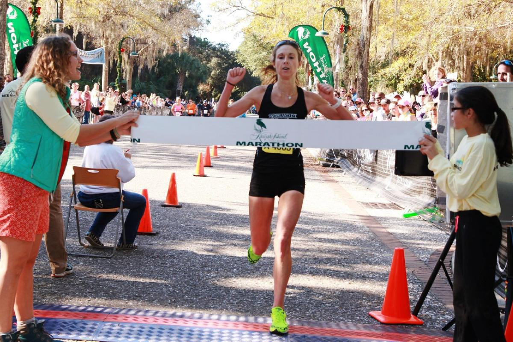

Local Women Wins Marathon

Estes Park native Laura Blake won the 27th Front Range Marathon over an elite field of
the best
long-distance runners in the country. Laura's time of 2 hr. 28 min. 21 sec. was only 2
minutes
off the women's course record set last year by Sarah Rawlings. Kathy Lasker and Lisa
Peterson
finished second and third, respectively. Laura's victory came on the heels of her
performance
at the NCAA Track and Field Championships, in which she placed second running for
Colorado State.
In an exciting race, Peter Teagan of San Antonio, Texas, used a finishing kick to win
the men's
marathon for the second straight year, in a time of 2 hr. 12 min. 34 sec. Ahead for much
of the
race, Kyle Wills of Billings, Montana, finished second when he could not match Teagan's
finishing
pace. Jason Wu of Boulder, Colorado, placed third in a very competitive field.
This year's race through downtown Boulder boasted the largest field in the marathon's
history,
with over 9500 men and 6700 women competing. Race conditions were perfect with low
humidity and
temperatures that never exceeded 85 degrees.